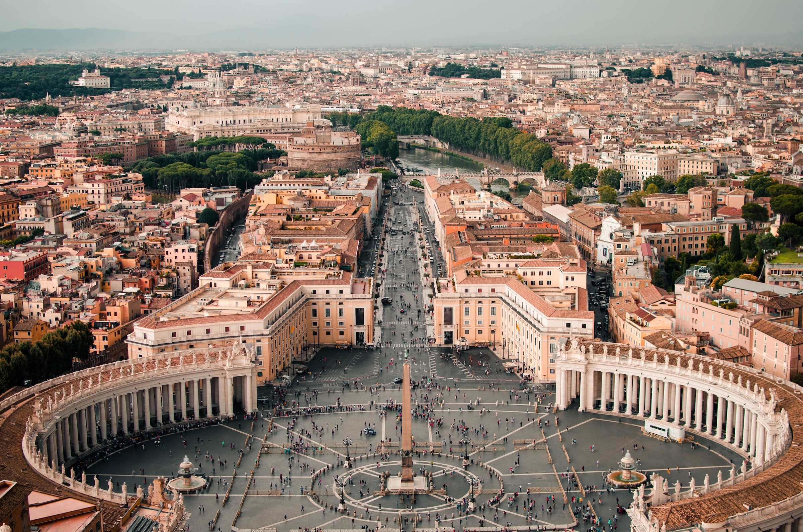

Travel
Yellowstone National Park


Geographical Location: North America
Yellowstone National Park, established in 1872, is a natural treasure and the first national park in the world. Spanning across Wyoming, Montana, and Idaho, the park covers nearly 3,500 square miles of diverse ecosystems, geothermal wonders, and breathtaking landscapes. Home to the iconic Old Faithful geyser, Yellowstone boasts an array of wildlife, including grizzly bears, wolves, and herds of bison and elk.
Yellowstone's geothermal features, such as hot springs and colorful geysers, showcase the Earth's dynamic forces. Visitors can explore its vast wilderness through hiking trails, scenic drives, and ranger-led programs. Yellowstone National Park stands as a testament to the importance of preserving natural wonders for future generations to experience and appreciate.
Photo Gallery

Mammoth Hot Springs has a number of actively forming Travertine terraces.

The drive to Lamar Valley requires some dangerous roads. But the result is amazing sunset views.
The multicolored layers get their hues from different species of bacteria living in the cooler water around the spring.
The buffalo were so common along the roads in Yellowstone that our mantra became "If it ain't lickin the car, we aren't stopping."

If you can handle the odor, the Yellowstone Sulphur Springs is a great place to hike.
Monteverde, Costa Rica


Geographical Location: South America
Monteverde, Costa Rica is situated 4,662 feet above sea level. Monteverde’s famed cloud forests are the byproduct of fog (a thick, low-hanging cloud) tangling amongst the leaves and branches of the forest canopy. Trails and hanging bridges offer a close-up view of the diverse variety of animals and plants living in the forest.
One of the main tourist locations in Monteverde is the town of Santa Elena, which is not only home to a variety of restaurants with delicious food, but a serpentarium as well. You can enjoy hiking, ziplining, and observing the native wildlife while staying in Monteverde. It’s a truly beautiful place.
Photo Gallery

You can hike trails and zipline through the Monteverde cloud forests.

Hanging bridges over the cloud forests allow for a birds-eye view.

You can visit hummingbirds at Monteverde’s Selvatura Park’s hummingbird garden, which exhibits over 14 different species of hummingbird.

El Tigre Waterfalls is made up of four falls, which are connected by trails and hanging bridges.
Rome, Italy


Geographical Location: Europe
Rome is one of the oldest metropolitan areas in the world. With a history dating back to 700 BC with the birth of the Roman Empire, the city has maintained its status as a cultural and historical hub of Europe. The city is peppered with ancient monuments, statues, and piazzas from different eras of history. The most famous location, the Colosseum, is touted as one of the seven modern wonders of the world. Rome houses several world famous museums, such as the Borghese and the Vatican Museum. It is also the only city in the world to encompass a recognized country, Vatican City.
Rome is also a great location for food, wine, and leisure. At the heart of Italy, Rome is a central gathering place for a diverse array of Italian cuisine; Neapolitan Pizza from the south, Tuscan wine, and truffle from the north. Rome’s most famous dish is carbonara. Beyond the food, Rome has a vibrant nightlife. The Trastevere neighborhood has plenty of bars and clubs for patrons and, just over the river, Centro’s shopping district is always bustling.
Photo Gallery

The Trevi Fountain is one of the main attractions in Rome. Make sure to go early in the day before it gets too busy!
When in Rome you cannot miss the Vatican. Enjoy the beautiful architecture and people watching.

The Spanish steps are beautifully painted and surrounded by a fountain. Come here to relax and take in the atmosphere.

The architecture in Rome is unmatched. Built centuries ago it still stands strong and exhibits beautiful artistry.

Do not forget to visit Victor Emmanuel while on your visit to Rome!